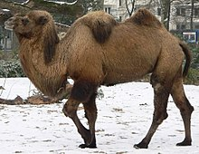

The four llamas and two camels are Camelids tend to be large and strictly herbivours. Camelids differ from ruminants in serveral ways. They have a three-chambered rather than four-chambered digestive tract; an upper lip that is split in two with each part seperately mobile; and an isolated incisor in the upper jaw. They have long legs that, because they lack tensor skin to bridge between thigh and body look longer still. (from Wikipedia)
|  | Camelid comparison |
|||
| # of Hump | Indigious region | Splits? | Produces Wool? | |
|---|---|---|---|---|
| Camels(bactrian) | 2 | Africa/Asia | Llma | Llma |
| Llamas | 1 | Andes Mountains | ||